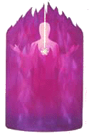

1. Ka�dı den se na nìjakı èas posaïte v ústraní a pøeøíkávejte si prohlášení fialového
plamene.
Mù�ete øíkat vaše prohlášení fialového plamene kdekoli a kdykoli. V autì, pøi
vašich denních povinostech, nebo pøed tím ne� jdete spát. Jednoduchım opakováním
mantry fialového plamene mù�ete pøivodit zmìnu kdykoli cítíte napìtí, jste unavení nebo
podrá�dìní. Ale nejvìtší u�itek z fialového plamene získáte, kdy� si dennì sednete
v klidu alespoò na patnáct minut a bez pøerušení budete øíkat prohlášení fialového
plamene.
Nejlepší je øíkat prohlášení fialového plamene na místì vyhrazeném spirituální
práci, jako jsou kaple, nebo dobøe osvìtlená, èistá a vzdušná místnost. Špatné svìtlo,
prach, nepoøádek a vydıchanı vzduch zabraòuje toku duchovní energie.
Na váš oltáø mù�ete dát svíèky, krystaly, kvìtiny a fotografie svatıch,
Nanebevzetıch Mistrù a vašich milıch.
2. Zaènìte vaší meditaci s fialovım plamenem modlitbou.
Pøed tím ne� zaènete øíkat vaše prohlášení vyslovte modlitbu nebo invokaci,
k Nanebevzetım Mistrùm, andìlùm a elementálùm aby vám pøišli na pomoc.
Elementálové jsou pøírodní duchové ohnì, vzduchu, vody a zemì, kteøí jsou
odpovìdní za péèi o naší planetu. Elementálové reprezentující ohnivı element se nazıvají
salamandøi; ti kteøí reprezentují vzdušnı element, sylfové; ti kteøí reprezentují vodní
element, undiny; ti kteøí reprezentují zemní element, gnómové. Oni jsou opravdu velmi
š�astní kdy� vám mohou pomoci èistit jak vaší auru tak i auru planety pomocí
fialového plamene.
3. Pøed zaèátkem pou�ití fialového plamene si pøivolejte ochranu.
Mistøi uèí, �e kdy� pøinesete více svìtla je temnota k nìmu pøitahována jako
magnetem. Proto potøebujete utìsnit vaší auru bílou a modrou ochrannou energií. Jednou
z nejlepších cest jak to udìlat je invokovat svìtelnı válec a ochranu Archandìla Michaela.
Řeknìte své prohlášení o svìtelném válci ka�dé ráno a opakujte je kdy� je
to potøeba v prùbìhu dne. Kdy� je øíkáte, vizualizujte oslòující bílé svìtlo z vaší JÁ
JSEM Pøítomnosti, Pøítomnosti Boha nad vámi, jak formuje neproniknutelnou stìnu svìtla
kolem vás.
Modlitba k Archandìli Michaelovi mù�e bıt velmi jednoduchá, napøíklad:
"Archandìli Michaeli, Pomoz mi! Pomoz mi! Pomoz mi!" Nebo� Archandìl prvního
paprsku, Archandìl Michael ztìlesòuje víru, ochranu, dokonalost a vùli Bo�í. Archandìl
Michael mi zachránil �ivot alespoò tucet krát co vím a pravdìpodobnì tisíckrát kdy si
toho nejsem vìdom.
Tak øíkejte svá prohlášení s radostí a s gustem a vìzte, �e kdy� voláte Archandìla
Michaela a jeho legie andìlù, budou okam�itì po vašem boku.
4. Zaènìte vaše prohlášení o fialovém plameni preambulí.
Úvod prohlášení je jako pozvánka. V nìm s láskou �ádáme bytosti fialového
plamene - Nanebevzeté Mistry a andìly – o pomoc a vedení.
Obecnì zaèínáme svá prohlášení: "Ve jménu milované, mocné a vítìzné Bo�ské
Pøítomnosti, JÁ JSEM ve mnì, a mém vlastním milovaném Svatém Kristovì vìdomí..." a
pøidáme naše oblíbené Mistry a svaté. Naše spojení s nimi je skrze naší JÁ JSEM
Pøítomnost a Svaté Kristovo vìdomí.
JÁ JSEM Pøítomnost je naše stálá, perfektní Bo�í Pøítomnost. Svaté Kristovo
vìdomí je naše vyšší já a vnitøní uèitel, kterı iniciuje a vede naší duši na její cestì ke
sjednocení s Bohem.
Zde je preambule kterou mù�ete pou�ít a pøidat:
Ve jménu milované, mocné a vítìzné Bo�ské Pøítomnosti, JÁ JSEM ve
mnì, a mém vlastním milovaném Svatém Kristovì vìdomí, já volám
milovaného Saint Germaina a andìly sedmého paprsku. Prosím o
___________.
�ádám, aby má prosba byla zmnohonásobena a pou�ita pro dobro všech
bytostí na této planetì, kteøí to potøebují.
Dìkuji a pøijímám jak byla vykonána v tuto hodinu v plné síle podle vùle
bo�í.
5. Nejprve øíkejte prohlášení pomalu, potom zrychlujte, kdy� opakujete prohlášení
vícekrát.
Poprvé kdy� øíkáte prohlášení asi jej budete chtít øíkat pomalu a se zámìrem.
Ka�dé slovo obdaøte intenzivní láskou k Bohu. Je veliká síla v pomalém pøeøíkávání
prohlášení. Kdy� postupnì zvyšujete rychlost stoupáte k vyšší tóninì pøi vašem
pøednesu, dostává vaše prohlášení zase jinou sílu.
Mark Prophet pøirovnával tuto akceleraci k rozjí�dìjícímu se vlaku. Zaèíná
"šš...šš" a za chvíli ji� dìlá "š-ššš-š-ššš" a pak u� "šš-šš-šš-šš!" Èím
rychleji jede, tím vìtší je akce.
Jak zvyšujete rychlost vašich prohlášení, zjistíte, �e jsou efektivnìjší ve
zvyšování vašich vibrací. Zvyšování rychlosti nesmí bıt nepøirozené. Musí bıt pro vás
pøirozené; prohlášení se musí zrychlovat témìø samo.
Kdy� pou�ijete nìkteré z kazety Save the World with Violet Flame, uslyšíte,
jak zprávnì zvyšovat rychlost.
6. Pou�ijte vizualizaci aby vám pomáhala v duchovní èinnosti.
Vìtšina lidí nevidí fialovı plamen v èinnosti svıma fyzickıma oèima. Ale kdy�
zavøete oèi a koncentrujete se na energetické centrum mezi oboèím mù�ete nìkdy "vidìt"
fialová plamen v akci vaším vnitøním zrakem.
 Lidem, kteøí mají vyvinuté duchovní vidìní, pøipomíná fialovı
plamen oheò, v barvách mezi tmavou indigovou a jasnou
ametystovou do rù�ovì fialové. Mù�ete vidìt tato plameny jak
spalují karmickou hlušinu. Lidem, kteøí mají vyvinuté duchovní vidìní, pøipomíná fialovı
plamen oheò, v barvách mezi tmavou indigovou a jasnou
ametystovou do rù�ovì fialové. Mù�ete vidìt tato plameny jak
spalují karmickou hlušinu.
Nìkdy pomáhá pøedstavit si tuto hlušinu jako špalky døeva nebo
dehtu ve vašem elekronovém pásu, jak se rozpadají v plameni.
Rozpadají se a poskakují a potom zmizí v chomáèku bílého kouøe.
Jakmile se nauèíte nìkterá prohlášení fialového plamene,
mù�ete zavøít oèi a zkusit následující vizualizace.
Vizualizace:
Pilíø fialového plamene
 Kdy� invokujete fialovı plamen, mù�ete se vizualisovat
obklopeni sloupem fialového ohnì asi dva metry v prùmìru a zhruba
tøi metry vysokım. Rozšiøuje se od spodu vašich nohou kus nad
vaší hlavu. Dívejte se na fialovı plamen jak se rozhoøívá, jako by
jste se dívali na film. Plameny šlehají a pulzují kolem vás v rùznıch
tvarech a odstínech rù�ové a fialové.
Kolem tohoto pilíøe fialového plamene vidíte váš svìtelnı
válec, ještì vìtší sloup z bílého svìtla, kterı chrání a uzavírá fialovı
plamen.
Udr�ujte v mysli tuto vizualizaci kdy� dìláte prohlášení bìhem dne.
Kdykoli si na ni vzpomenete, posilujete tento obraz.
Léèení víøící koulí fialového plamene
 Tato vizualizace pomáhá s léèením vašich ètyøech
ni�ších tìl. Kdy� øíkáte vaše prohlášení fialového
plamene, pøedstavte si velkou kouli fialového svìtla,
která se formuje kolem vás. Jak zrychlujete pøeøíkávání
prohlášení pøedstavte si, jak koule víøí, jako atrakce
v zábavním parku. Tato vizualizace pomáhá s léèením vašich ètyøech
ni�ších tìl. Kdy� øíkáte vaše prohlášení fialového
plamene, pøedstavte si velkou kouli fialového svìtla,
která se formuje kolem vás. Jak zrychlujete pøeøíkávání
prohlášení pøedstavte si, jak koule víøí, jako atrakce
v zábavním parku.
Vidíte jak rotuje rychleji a rychleji. Tato vizualizace
zakotvuje fialovı plamen a akceleruje vibrace vašich bunìk, atomù a elektronù.
Pak si pøedstavte menší koule fialového plamene pøilo�ené kolem ka�dého
orgánu ve vašem tìle. Pøedstavte si jak fialovı plamen odstraòuje ka�dou temnotu která
mù�e bıt základem nemoci a okam�itì ji likviduje. Pak si pøedstavte fialovı plamen jak
vylepšuje vaše orgány.
Po�ádejte svou JÁ JSEM Pøítomnost a Svaté Kristovo vìdomí a andìly fialového
plamene aby udr�ovali tyto koule fialového plamene kolem vás bìhem dne. Dodávejte
energii vašemu po�adavku periodickım opakováním vizualizace rotující koule.
Experimentujte s touto vizualizací a uvidíte jaké ve vás zanechá pocity.
7. Pou�ívejte fialovı plamen ka�dı den.
Nejlepší doba k prohlášením je brzy ráno. Uvidíte, �e kdy� uèiníte prohlášení
jako první vìc po ránu, váš den bude probíhat mnohem hladèeji. Mù�ete uèinit speciální
po�adavek pro transmutaci jakıchkoli mentálních, citovıch nebo fyzickıch problémù na
kterıch ve vašem �ivotì pracujete. Mù�ete pracovat na vztazích s vašimi pøáteli i
vašimi drahımi.
8. Pou�ijte fialovı plamen, aby zhojil záznamy vašich minulıch �ivotù.
Jakmile budete pou�ívat fialovı plamen nìjakou dobu, mohou se vám zaèít
vybavovat vzpomínky na minulé �ivoty. Vzpomínky z minulıch �ivotù není nìco, co by
se mohlo brát na lehkou váhu. Jakmile jste si toho vìdomi, karma (pozitivní i negativní)
z tohoto �ivota vyplouvá napovrch.
Negativní karma je nìco jako Pandoøina skøíòka. Jakmile ji otevøete, chce se vám
vyhrnout si rukávy, trávit svùj èas slu�bou �ivotu a volat ka�dı den andìly fialového
plamene aby transformovaly karmickou hlušinu. Koncentrací na prohlášení fialového
plamene mù�e trvat jen šest mìsícù ne� vyrovnáte karmu jednoho minulého �ivota.
Toto je opravdu velikı dar kterı nám byl dán Saint Germainem.
Jakmile pou�íváte fialovı plamen, obrazy z minulıch �ivotù vám mohou pøicházet
na mysl. Mù�ete vidìt sami sebe, jací jste byli pøed dávnımi vìky. Nebo mù�ete mít
jenom pocit, �e jste byli v urèité dobì nebo na urèitém místì. Jsou-li tyto záznamy
bolestivé -- a oni vìtšinou jsou nebo� naše duše pláèe po rozøešení –mù�ete cítit
smutek nebo �al. Ale takté� se budete cítit osvobozeni proto�e víte �e pou�itím
prohlášení fialového plamene, pøemìòujete záznamy vaší karmy.
Jakmile jste si vìdomi tìchto vzpomínek, nesna�te se je potlaèit. Místo toho, zamìøte
svou pozornost na svìtlo ve vašem srdci. Pøedstavujte si jak jsou vzpomínky nasycovány
fialovım plamenem dokud jejich forma nezmizí. Pak nechte vzpomínky bıt a nahraïte je
vaším vnitøním zrakem záøícím bílım sluncem.
Mù�ete té� pou�ít vizualizaci gumy. Kdykoliv vidíte tyto scény, vizualizujte
velikánskou gumu, na zpùsob køídy na tabuly, ale fialovou, která obraz vygumuje.
Jakmile to udìláte dostateènı poèet krát, pøestanou bıt vzpomínky bolestivé a postupnì
zmizí ze zorného úhlu vaší mysli.
Kdy� pou�íváte fialovı plamen pro práci s karmickımi záznamy, transformujete
dva elementy. První jsou vzpomínky emoconální a pamì� duše na události, které vám
zpùsobily bolest. Druhı je karmická energie, která vás poutá k tìm, koho jste zranili nebo
kdo zranil vás.
Rád to nazıvám "pøíèina, následek, záznam a pamì� " karmy, co� zahrnuje
všechny energie které jste zpoutali negativními myšlenkami nebo pocity z minulosti.
Záznamy minulıch �ivotù jsou jako soubory ve vašem poèítaèi. Musíte vymazat
negativní záznamy a vzpomínky aby jste udìlali místo pro pozitivní. Kdy� toto udìláte
pomocí fialového plamene, osvobozujete svojí duši, aby se mohla pøesunout na vyšší
úroveò existence.
Psychoterapie vám dává klíèe k pochopení sebe sama, aby jste mohli dìlat lepší
volby ve svém �ivotì. Mù�ete získat rozøešení od nìkoho, koho znáte proto�e vidíte
negativní záznam z minulosti a tak se rozhodnete uèinit pozitivní èin v tomto �ivotì. Kdy�
pou�ijete prohlášení fialového plamene a slu�bu tìm, komu jste ublí�ili, kombinace
obou akcí mù�e zrušit pøíèinu, efekt, záznam a vzpomínku na tyto bolestivé incidenty.
A je to jenom tím, �e se dostanete k tìmto záznamùm, �e mù�ete proèistit cestu
pro vaší duši aby mohla dostat novou pøíle�itost. Mù�ete zrychlit rozvoj vaší duše
v tomto �ivotì a tak zkrátit cestu k vašemu cíli splynutí s Bohem.
V�dy, kdy� vyrovnáte karmu z urèitého �ivota, vaše vyšší já vám mù�e
vyjevit další �ivot, kterı potøebuje dát do poøádku a pak další a další. Je dùle�ité
aby jste tyto negativní záznamy z vašich minulıch �ivotù necítili jako zátì�. Všichni
jsme v minulosti dìlali chyby, jinak bychom tady dnes nebyli. Odpus�te si a pokraèujte.
Buïte vdìèní, �e jste tady a �e máte pøíle�itost vymazat tyto záznamy fialovım
plamenem.
Jakmile jednou zaènete, pokraèujte. Ka�dá dlouhá cesta zaèíná prvním krokem.
V�dy kdy� zmìníte záznam z minulého �ivota fialovım plamenem, získáte novı pocit
osvobození vaší duše. A takto zjistíte �e berete svùj �ivot a cíl své duše do vlastních
rukou.
9. Zvìtšete rozsah vašich invokací a zahròte do nich èištìní karmického nepoøádku
vašeho domu, vašeho okolí a celé planety.
Jakmile si vyzkoušíte smìrování fialového plamene, aby pomáhal ostatním, mù�ete
zaèít s pøedstavou své aury jako fontány fialového plamene, kde se všichni které
potkáte mohou napít. Pøipomeòte si aby jste fialovı plamen v�dy zpøístupnili tìm, kdo
jsou v nouzi.
Ne jenom �e fialovı plamen rozpouští vaší vlastní karmu, ale té� rozpouští
skupinovou a planetární karmu, která pochází z válek a nahromadìné nespravedlnosti.
Lidé mají rùzné zkušenosti z pou�ití fialového plamene. Nìkteøí pilnì opakují prohlášení
po mìsíce ne� obdr�í nìjaké potvrzení �e to funguje. Jiní mají velkolepé vısledky hned
jak poprvé otevøou ústa.
Mù�ete si vypracovat vlastní pou�ití fialového plamene ve spolupráci s vaším
vyšším já. Mù�ete pøidat fialovı plamen do vašich denních modliteb nebo meditací
a� jsou jakékoli.
Doufám �e budete mít radost z poznání �e jste jedním z tisícù z celého svìta, kterı zmìnil
svùj �ivot s pomocí tohoto zázraèného rozpouštìdla – nejvìtšího Bo�ího daru vesmíru. |